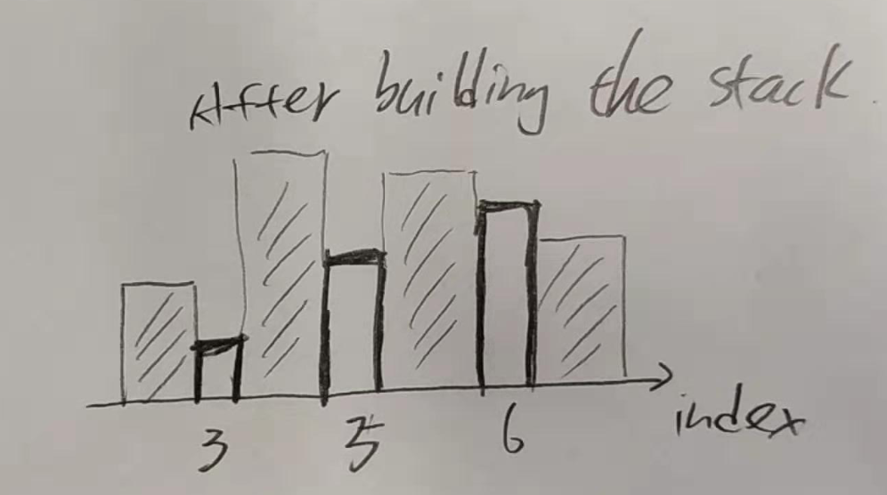

Introduction
stack: repeated, depth, intersection [ [ ] ]
Stack的感觉就是我有若干个值（I don't know the exact number), 但是我要用一个variable来表示它们。而stack的功能就是帮我暂时保管它们
Trick: push a Integer.MAX_VALUE or Integer.MIN_VALUE to the stack as a boundary.
Created:2019-02-05 Last modified:2019-08-16 @ Rockford, IL / 2019-09-01
stack: repeated, depth, intersection [ [ ] ]
Stack的感觉就是我有若干个值（I don't know the exact number), 但是我要用一个variable来表示它们。而stack的功能就是帮我暂时保管它们
Trick: push a Integer.MAX_VALUE or Integer.MIN_VALUE to the stack as a boundary.
e.g. parenthese validator, simplify linux path.
The key is to know how does later elements affect former elements.
e.g. flatten or build a nested data structure. DFS can also be applied and is usually faster and code is shorter.
You may be required to use non-recursive implementation to do inorder/preorder/postorder traversal.
Stack DFS inorder: disconnect node.left child when push node.left into stack.
Stack DFS preorder/inorder:preorder doesn’t need modify the tree. Since postorder = reverse of right-dominated preorder, so postorder doesn’t need modify the tree.
Desc: given ["2", "1", "+", "3", "*"] = (2+1) * 3 = 9
Sol: classic stack problem. optimization: switch instead of ifelse + using int[] to simulate stack.
Desc: given a linux path e.g. /a/../d/.././../sd/. simplify it to the canonical path e.g. /sd
Sol: stack. First, convert the input string to '/'-split array. Second, apply stack to build the path.
20. Valid Parentheses
32. Longest Valid Parentheses
Desc:
#20. given a string e.g. "{[]()}" or "{{[}}", valid if it's valid.
#32. given a string that only contains '(' and ')' e.g. "(()", find the longest valid substring.
Sol: #32. DP or using Stack.
1. using stack. Push index to stack and keep track the longest substring.
st.push(-1); // valid substring start from -1.
for(int i = 0; i < c.length; i++){
if(c[i] == '('){
st.push(i);
}else{
if(st.size() > 1){
st.pop();
len = max(len, i - st.peek());
}else{
st.pop();
st.push(i); // update the valid substring's left.
}
}
}
2. DP solution. When giving '(', ignore.
// When c[i] = '(', dp[i] = 0.
// When c[i] = ')', dp[i] = dp[i- dp[i-1] - 1] == '(' ? 2 + dp[i-1] + dp[i- dp[i-1] - 2]:0
Desc: given a string represented non-negative integer (no leading zero). remove k digits to make it smallest.
Sol: iterate from left to right, if digit[i] > digit[i+1], then remove digit[i], remove at most k times; finally, if k > 0, then remove rest of k elements.. During the process, we need a stack based on char[].
Desc: a Binary Tree can be serialized by pre-order. e.g.
1
null 2
3 null
null null
= "1,#,2,3,#,#,#".
Now given a such string, validate if it's a valid BT serialization.
Sol:
stack solution: each node (either null or not-null) consumes 1 slot, each not-null node provides 2 slots.
when having a not-null node, push (2) it to the stack, as well as decrese the previous stack value.
O(1) space solution: compress the above stack into a single integer. keep a currentSlot (which is the stack) variable, and iterate the string, make sure it is not smaller than 0 during the iteration.
1130. Minimum Cost Tree From Leaf Values
Desc: given an array of integers to build a tree, where each tree node has either two children or none (which is the leaf). The given integer array's elements are tree's leaves. Now creating a node's cost = max(left subtree's leaf) * max(right subtree's leaf). Find a way to build the tree such that has minimum cost. e.g. [3,2,4,1] = [3,2],[4,1] => 3 * 2 + 4 * 1 + 3 * 4 = 22.
Sol 1: The problem can be solved with DP. O(n^3)
for(int k = i; k < j; k++){
dp[i][j] = min(dp[i][j], dp[i][k] + dp[k+1][j] + maxValue[i][k] * maxValue[k+1][j])
}
maxValue[i][j] = max(maxValue[i][i], maxValue[i+1][j]);
Sol 2: can also be solved with using stack.
// intuition: we don't want to put a big value as a leaf that has a large depth, because it will increase the total cost.
// so we want to use a small value as a leaf that has a large depth.
// [3,2,4] we need to use 2 as deep as possible.
st.push(Integer.MAX_VALUE);
for(int num: nums){
while(st.peek() <= num){
cost += st.pop() * min(st.peek(), num);
// 2 * min(3,4)
// 3 * min(Integer.MAX_VALUE, 4);
}
st.push(num);
}
* 636. Exclusive Time of Functions
Desc: given a list of function start and end time, function may nested. return the time spend on each function. ** a function time doesn't include its child functions time **
Sol: using stack to record the function invocation stack. Whenever an event (start/end) happens, we add time spent on last function (** time index)
Desc: Given n non-negative integers representing the histogram's bar height where the width of each bar is 1, find the area of largest rectangle in the histogram.
Sol: maintain a stack that stores indices. The corresponding values are in increasing order. When next value is less than stack value, pop up stack value and calculate its maxArea.

496. Next Greater Element I
503. Next Greater Element II
556. Next Greater Element III
desc:
#496. given two array of integers (no duplicated in each array) nums1 & nums2, for each element in nums1, find its next greater elements in nums2.
#503. given an array of integers, for each elements, find its next greater value. Suppose the array is circular. If no such element existed, set it to -1.
#556. given an integer, return an integer that has the same digit as input but is the smallest number that is greater than the input. if no such, return -1.
Sol:
#496. Using hashmap + stack.
#503. Using stack with 2 pass. First pass, push index and pop index. Second pass, only pop index.
#556. next permutation. Attention on overflow.
Desc: #251 and #341 ask to return an iterator. #430 ask to return the flatten result.
Sol:
#251. Because it has limited layer (2 layers), it's not a typically nested structure. keep 2 indices to flatten it.
#341. DFS seems not applied here since DFS will flatten it at once and here it asks an iterator. but we can flatten it to an array at the constructor, and return value one by one.
Stack solution: two stacks. one stack keep nested structure layer by layer, another one keeps each nested structure index.
#430. Stack: when encountering a node that has child, push the node's next node to the stack make sure it's not null and make child as next.
Desc: Given a string "[12,[21,[23],32],12,[2,3]]" generate the "NestedInteger" structure.
Sol: DFS is better than Stack
Stack solution: when encountering a [, add a new "nestedinteger" and push it to the stack, ] pop up
DFS: todo
Desc: #173 ask an iterator of traversing a BST.
#94. directly ask a non-recursive solution.
Sol: #173. Because it asks an iterator, so cannot use recursive DFS. And inorder traversal of BST returns number in order.
225. Implement Stack using Queues (sol: one in stack, and one out stack)
232. Implement Queue using Stacks (sol: one queue, let push be O(n), (push has a helper queue) then top and pop will be easy.
155. Min Stack (sol: one stack, st, as a regular stack, another stack, minSt, push number only if the peek >= number, and pop number if peek.equals(t.pop).don't use ==, use .equals()
/**
* Decode string
* "2[a]bc" => "aabc"
* "2[a2[d]c]d" => "addcaddcd"
* repStr stack helps keep the outer value.
*/
class Solution {
public String decodeString(String s) {
Stack<String> repStr = new Stack<>();
Stack<Integer> repNum = new Stack<>();
int count = 0;
String strCount = "";
for(int i = 0; i < s.length(); i++){
if(s.charAt(i) <= '9' && s.charAt(i) >= '0'){
count = count * 10 + (s.charAt(i) - '0');
}else if(s.charAt(i) == '['){
repNum.push(count);
count = 0;
repStr.push(strCount);
strCount = "";
}else if(s.charAt(i) == ']'){
StringBuilder sb = new StringBuilder(repStr.pop());
int temp = repNum.pop();
for( ; temp > 0 ; temp--){
sb.append(strCount);
}
strCount = sb.toString();
}else{
strCount += s.charAt(i);
}
}
return strCount;
}
}
class Solution {
public int evalRPN(String[] tokens) {
if(tokens == null || tokens.length == 0) return 0;
Stack<Integer> st = new Stack<>();
for(int i = 0; i < tokens.length; i++){
switch(tokens[i]){
case "+": st.push(st.pop() + st.pop());break;
case "-": {
int v1 = st.pop();
st.push(st.pop() - v1);
};break;
case "*": st.push(st.pop() * st.pop());break;
case "/": {
int v1 = st.pop();
st.push(st.pop() / v1);
};break;
default: st.push(Integer.parseInt(tokens[i]));
}
}
return st.pop();
}
}
/*** an array based question that can be solved by stack
This question is not obivous.
**/
class Solution {
public int[] dailyTemperatures(int[] T) {
if(T == null || T.length == 0) return T;
int [] result = new int[T.length];
Stack<Integer> st = new Stack<Integer>();
st.push(0);
for(int i = 1; i < T.length; i++){
while(st.size() > 0 && T[i] > T[st.peek()]){
int index = st.pop();
result[index] = i - index;
}
st.push(i);
}
return result;
}
}